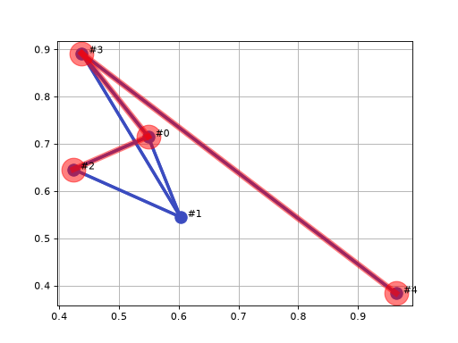
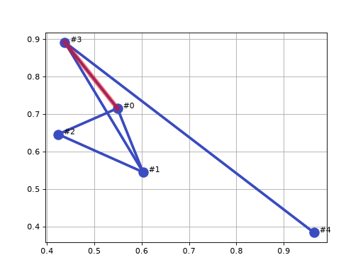
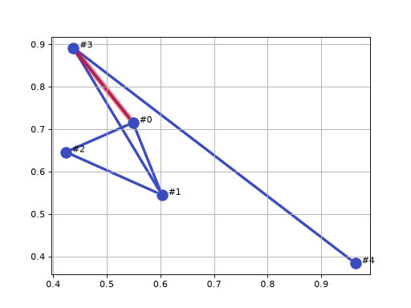

Visualization
Rendering the graph itself, with matplotlib or via GraphViz. See Transformations to matrix representations for exporting the graph as data (a matrix or dot file) rather than displaying it.
Plot graph as a vertex/edge diagram using Matplotlib |
|
Display graph as a vertex/edge diagram in a browser tab |
|
Highlight a path through the graph |
|
Highlight an edge in a plot of the graph |
|
Highlight a vertex in the graph |
Details
- Graph.plot(colorcomponents=True, force2d=False, vopt=None, eopt=None, text=None, block=False, grid=True, ax=None)[source]
Plot graph as a vertex/edge diagram using Matplotlib
- Parameters:
vopt (dict, optional) – vertex format, defaults to 12pt o-marker
eopt (dict, optional) – edge format, defaults to 3pt line width
text (dict, bool or None, optional) – text label format, defaults to None
colorcomponents (bool, optional) – color vertices and edges by component, defaults to True
force2d (bool, optional) – plot only the first two coordinates of each vertex even if they have more, defaults to False
block (bool or None, optional) – block until figure is dismissed, defaults to False. If None the figure is not shown at all, which is useful when adding to the plot or saving it.
- Raises:
ValueError – the graph is empty, or a vertex has no coordinate or fewer than two coordinate values
- Return type:
The graph is plotted using Matplotlib according to the dimensionality of the vertex coordinates (set by the dim parameter to graph constructor). If the dimensionality is
2, then a 2D plot is generated.
3, then a 3D plot is generated.
4 or more, then a 3D plot is generated using the first three coordinates.
If a vertex has no coordinate or fewer than two values, a ValueError is raised.
If
colorcomponentsis True then all edges and vertices within a component are assigned a unique color.If
textis a dict it is used to format text labels for the vertices which are the vertex names. Iftextis None or True default formatting is used. Iftextis False no labels are added.Note
Only embedded graphs can be plotted: every vertex must have a coordinate of at least two values. A coordinate of more than two values is drawn in 3D, using the first three.
>>> from pgraph import UGraph >>> import numpy as np >>> np.random.seed(0) >>> g = UGraph() >>> for i in range(5): ... g.add_vertex(np.random.rand(2)); UVertex[#0, coord=(0.5488, 0.7152)] UVertex[#1, coord=(0.6028, 0.5449)] UVertex[#2, coord=(0.4237, 0.6459)] UVertex[#3, coord=(0.4376, 0.8918)] UVertex[#4, coord=(0.9637, 0.3834)] >>> for i, j in [(0, 1), (0, 2), (0, 3), (1, 2), (1, 3), (3, 4)]: ... g.add_edge(g[i], g[j]); Edge{[#0] -- [#1], cost=0.1786} Edge{[#0] -- [#2], cost=0.1431} Edge{[#0] -- [#3], cost=0.2087} Edge{[#1] -- [#2], cost=0.2056} Edge{[#1] -- [#3], cost=0.3842} Edge{[#3] -- [#4], cost=0.7315} >>> g.plot(block=None)
(
Source code,png,hires.png,pdf)
- Seealso:


- Graph.showgraph(display=True, **options)[source]
Display graph as a vertex/edge diagram in a browser tab
- Parameters:
- Raises:
RuntimeError – GraphViz is not installed, or fails
- Returns:
path of the rendered PDF if
displayis False, else None- Return type:
str or None
g.showgraph()renders the graph to PDF with GraphViz and displays it in a browser tab. Withdisplay=Falsethe PDF is rendered but not opened and its path is returned, which is useful for tests and notebooks.Note
Vertices do not have to have coordinates for this to work, but if they do the coordinates are used to position the vertices in the output. If no coordinates are given, GraphViz will choose a layout.
- Graph.highlight_path(path, block=False, **kwargs)[source]
Highlight a path through the graph
- Parameters:
path (list of Vertex subclass) – sequence of vertices forming a path
block (bool or None, optional) – block until figure is dismissed, defaults to False. If None the figure is not shown.
kwargs (
Any) – arguments passed tohighlight_edge()andhighlight_vertex()
- Return type:
The vertices and edges along the path are overwritten with a different size/width and color.
>>> from pgraph import UGraph >>> import numpy as np >>> np.random.seed(0) >>> g = UGraph() >>> for i in range(5): ... g.add_vertex(np.random.rand(2)); UVertex[#0, coord=(0.5488, 0.7152)] UVertex[#1, coord=(0.6028, 0.5449)] UVertex[#2, coord=(0.4237, 0.6459)] UVertex[#3, coord=(0.4376, 0.8918)] UVertex[#4, coord=(0.9637, 0.3834)] >>> for i, j in [(0, 1), (0, 2), (0, 3), (1, 2), (1, 3), (3, 4)]: ... g.add_edge(g[i], g[j]); Edge{[#0] -- [#1], cost=0.1786} Edge{[#0] -- [#2], cost=0.1431} Edge{[#0] -- [#3], cost=0.2087} Edge{[#1] -- [#2], cost=0.2056} Edge{[#1] -- [#3], cost=0.3842} Edge{[#3] -- [#4], cost=0.7315} >>> g.plot(block=None) >>> path, length, _ = g.path_Astar(g[2], g[4]) >>> g.highlight_path(path, block=None)
(
Source code,png,hires.png,pdf)
- Seealso:


- Graph.highlight_edge(edge, scale=2, color='r', alpha=0.5)[source]
Highlight an edge in a plot of the graph
- Parameters:
- Raises:
ValueError –
edgedoes not connect two vertices, for example because it has been removed from the graph- Return type:
None
>>> from pgraph import UGraph >>> import numpy as np >>> np.random.seed(0) >>> >>> g = UGraph() >>> for i in range(5): ... g.add_vertex(np.random.rand(2)); UVertex[#0, coord=(0.5488, 0.7152)] UVertex[#1, coord=(0.6028, 0.5449)] UVertex[#2, coord=(0.4237, 0.6459)] UVertex[#3, coord=(0.4376, 0.8918)] UVertex[#4, coord=(0.9637, 0.3834)] >>> edges = [] >>> for i, j in [(0, 1), (0, 2), (0, 3), (1, 2), (1, 3), (3, 4)]: ... edges.append(g.add_edge(g[i], g[j])); >>> g.plot(block=None) >>> g.highlight_edge(edges[2])
(
Source code,png,hires.png,pdf)
- Seealso:


- Graph.highlight_vertex(vertex, scale=2, color='r', alpha=0.5)[source]
Highlight a vertex in the graph
- Parameters:
vertex (Vertex subclass, or iterable of Vertex subclass or str) – The vertex (or vertices, or vertex names) to highlight
scale (float, optional) – Overwrite with a marker that is larger than the original, defaults to 1.5
color (str, optional) – Overwrite with a line in this color, defaults to ‘r’
alpha (float, optional) – Transparency of the highlight, defaults to 0.5
- Return type:
None
>>> from pgraph import UGraph >>> import numpy as np >>> np.random.seed(0) >>> g = UGraph() >>> for i in range(5): ... g.add_vertex(np.random.rand(2)); UVertex[#0, coord=(0.5488, 0.7152)] UVertex[#1, coord=(0.6028, 0.5449)] UVertex[#2, coord=(0.4237, 0.6459)] UVertex[#3, coord=(0.4376, 0.8918)] UVertex[#4, coord=(0.9637, 0.3834)] >>> for i, j in [(0, 1), (0, 2), (0, 3), (1, 2), (1, 3), (3, 4)]: ... g.add_edge(g[i], g[j]); Edge{[#0] -- [#1], cost=0.1786} Edge{[#0] -- [#2], cost=0.1431} Edge{[#0] -- [#3], cost=0.2087} Edge{[#1] -- [#2], cost=0.2056} Edge{[#1] -- [#3], cost=0.3842} Edge{[#3] -- [#4], cost=0.7315} >>> g.plot(block=None) >>> g.highlight_vertex(g[2])
(
Source code,png,hires.png,pdf)